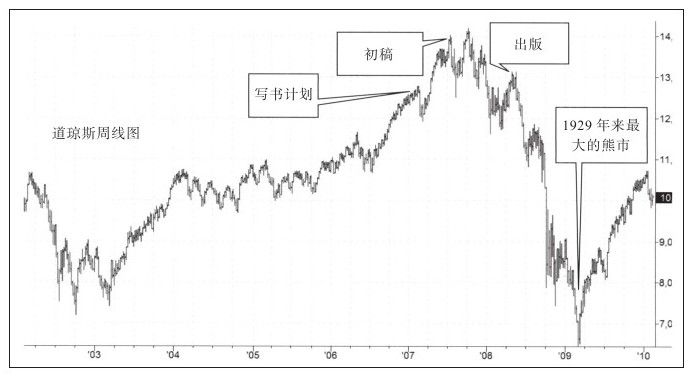

牛市时人们很乐意消费。2007年2月牛市见顶的时候，出版商请我和另外两个朋友在纽约市的一家豪华餐厅吃饭，那是一段愉快的时光，而我的研究表明牛市即将走完。我告诉出版商未来要走红的可能是与卖出有关的交易类书籍，他也赞同这个观点并请我写下了本书的前一版。
因为出版印刷需要好几个月的时间，所以我答应他在年底前完成底稿，并告诉他希望届时牛市已经结束，我们可以在熊市中发行。
无论涨跌，市场往往矫枉过正，尽管2007~2009年的大熊市的严重程度超乎想象，但终于在2009年3月结束了，同时创造出世纪性的大机会。

在这次熊市中幸存下来的交易者学到了做好卖出及做空计划的重要性，更多人开始对做空感兴趣，而这是专家交易员一直做的事情，因为做空赚快钱。
2010年2月，出版商建议我升级这本书，这次出版商没有破费，我们只通过电话沟通了新书的构想。因为第一部分（关于买入）的方法已经经过了时间的检验并在今天仍然有效，所以我们决定简化这部分内容，此外我们决定增加第四部分内容，以案例形式解释卖出和做空的原则。接下来我们分析在史上最大的熊市中我们是如何成长的。